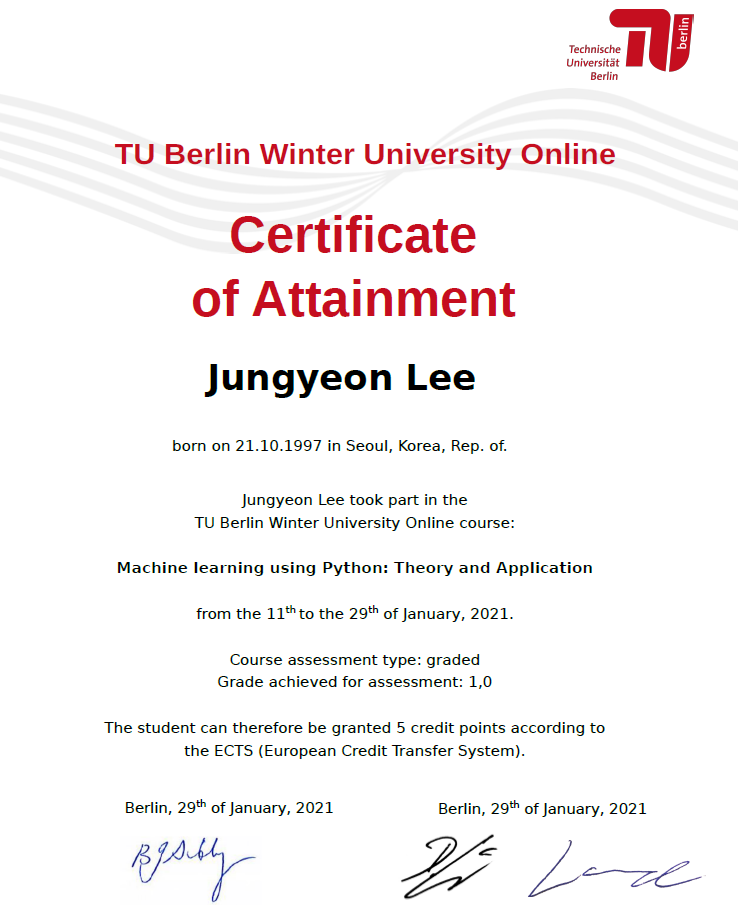

TU Berlin Winter University Online 2021
사실 ML/DL 카테고리에는 공부내용만 적을려고 했으나 관련 수업을 들은 후기도 여기에 정리하면 좋을 것 같아 여기에 분류했다. 후에 수업에서 배운 내용들도 차근차근히 정리해볼 예정이다.
수업 신청하게 된 계기와 과정(Before the course)
학교에서 지원해주는 교환학생이라던가 해외 협업 수업은 언제나 하고 싶었지만 항상 발목을 잡은 건 영어였던 것 같다. 영어..읽고 쓰는 것도 좋아하고 듣는 것도 다 알아듣진 못해도 어느정도는 되는데 항상 ’말하기’가 문제였다. 사실 천성 내향형 인간이라 한국어로도 말은 원래 잘 못하는데 영어는 더더욱 자신이 없었다. 게다가 학교에서 지원하는 프로그램들은 내가 영어를 잘하는지 증명을 해야하는데 토플 준비만했을 뿐 정작 시험은 안봤다. 계속 다른 일에 우선순위가 밀리고 시험비도 그냥 한번 시도해보기엔 만만치 않아서가 변명이라면 변명이었다. 어쨌든 자격증이 없으니 지원자격자체가 안됬었다.
그런데 영어 자격증이 없어도 지원할 수 있는 프로그램이 하나 생겼고 코로나로 인해 온라인이긴 했지만 지원했다. 마지막 4학년만 남았기에 이번이 마지막일 수도 있다는 생각도 있었다. 들을 수 있는 수업이 4개가 있었는데 데이터 사이언스/시각화분야 수업과 머신러닝 이론/적용분야 수업 중에 고민을 했다. 결과적으로는 머신러닝 이론/적용을 선택했다. 이유는 아래와 같았다.
- Syllabus에 이미 알고 있는 내용들이 좀 더 많았기에 혹시 놓치더라도 뒤쳐지지 않을 것 같았음 + 영어로 소통하는 것에 좀 더 집중할 수 있음
- Feature Engineering 부분이나 Unsupervised Learning과 같은 실제 적용은 많이 해보지 않은 부분들을 다지는 기회
- Lecturer 중에 전공분야가 Reinforcement Learning이신 분이 있어서 (혹시라도 친해지면) 이것저것 물어볼 수 있지 않을까라는 생각
그래서 학교에 지원을 넣고 합격이 될까 안될까 걱정반 설렘반이었는데, 담당 교수님과 편하게 카톡영상통화로 면접을 보고 난후 흔쾌히 허락해주셨다. 다행이었다. 이제 독일 학교에 지원서를 작성하는데 문제가 하나 있었다. 지원서 영어실력을 증명하라는 칸이 있었는데 위에 써놓은 것과 같이 난 자격증이 없었기에 뭘 제출하라는 말인지 이해하지 못했다. 근데 컨택해주신 교수님이 분명 영어 자격증없어도 가능하다고 하셨던 것 같은데..뭘까…고민을 하다가 학교에서 이수한 과목들 목록을 뽑았다. 그중에는 영국인 교수님이 수업하신 (물론 영어로 진행된) 영국문화 알아가기라는 교양 수업도 있었고, 필수 이수과목인 대학영어, 전공과목이지만 영어로 진행한 수업들도 있었다. 그래서 학기별 내가 들은 ’영어’와 관련된 수업 목록들을 하나하나 설명하는 보고서(?)를 작성하여 “이런 영어로 진행된 수업들을 잘 이수하였으니 난 영어로 소통가능하다”라고 어필했다. 다행히도 그 보고서로 나의 영어 실력이 증명이 되어서 간신히 수업등록을 마칠 수 있었다. 이렇게 우여곡절 끝에 수업등록을 하니 영어자격증을 빨리 따야겠다는 생각만 더 절실해졌다.😂(이제 조금 여유가 생긴 2월달에 토플 시험 볼 예정이다.)
수업을 들으면서 든 생각들과 느낌(During the course)

수업이 시작되고 역시나 걱정되는 건 영어로하는 의사소통이었다. 급하게 영어 말하기 세포를 깨우기 위해 Facebook 지인분들께 방법도 여쭤보고 혼자서 엄청 중얼중얼 거렸다. 단기간에 실력적인 향상 효과는 미미했지만 마음의 준비는 할 수 있었다. 근데 확실히 수업이 막상 시작하니 난관은 말하기보다 듣기에 있었다. 다양한 나라의 다양한 억양은 듣기 힘들다는 이야기를 듣긴 했어도 직접 체험해보니 잘 안들리는 황당함이란.. 다양한 나라의 사람들과 소통하고 싶다는 포부로 시작했던 처음 마음과 달리, 수업하는 동안은 ’잘’듣는 것만으로도 나에게 도전이었던 것 같다. 그런데 한편으로는 완벽한 영어를 구성하지 않는, 나와같이 영어가 제2외국어이신 분들과 수업을 하니 말할때는 부담없이 나도 막(?)말했던 것 같다. 어쨌든 걱정했던 ’말하기’는 생각보다 난관이 아니었고, ’듣기’가 난관이었다는 이야기다. 같이 수업을 듣는 분들은 약 20명 정도 였는데 첫시간에 자기소개할 때 들어보니 다들 박사과정이거나 직장인이었다..?!😲 학사도 졸업 못한 나랑은 너무나 대비되는 분들이라 신기하기도 하고 걱정도 됐다. (학교는 왜 이런 프로그램인지 왜 안알려줬지) 그분들의 능력은 나중에 프로젝트 발표하실 때 확연히 느낄 수 있었는데 프로젝트 완성도나 주제가 넘사벽이었다.
수업은 대부분 강의 시청 + exercise + 질의 응답으로 이루어졌기에 내가 적극적으로 이야기하고 질문할 부분이 많진 않았다. 그리고 앞서 적었던 것처럼 수업내용이 나한테는 완전히 새로운 분야는 아니어서 그런지 그럭저럭 따라갈 수 있었다. (벌써 수업 마쳤다고 기억이 미화된건지는 모르겠지만) 그리고 모르는게 있으면 구글링으로 잘 정리해놓은 훌륭하신 한국인 분들의 포스팅, 가지고 있는 책들로 메꿔갔기에 수업을 따라가는 건 많이 어렵진 않았던 것 같다. 진짜 다른분들이 잘 정리해놓으신 포스팅에 도움을 많이 받아서 항상 드는 생각이지만 언젠가는 나도 저분들처럼 도움되는 포스팅을 하고 싶다라는 생각이 든다.
사실 등록 전에는 몰랐던 Group Work는 수업계획서에서 처음 봤을 때 당황스러웠다. 그러나 걱정됐던 부분과 달리 팀구성도 잘됐고, 내가 주도해서 그런지 주제도 내가 원하는 걸로 진행하게되었다. 워낙 짧은 시간(3일 정도)에 완성해야하는 프로젝트였기에 마음과 달리 여러가지 기법들을 사용하기 보다는 심플하고 충실하게 ‘배운것만’ 응용해서 프로젝트를 마무리했다. 그래도 팀원분들과 영어로 의견 조율하는게 잠깐이었지만 재밌었고, 이번 경험으로 영어가 더이상 공포의 대상이 아닌 세상 다른 사람들과 ’소통’할 수 있는 도구라는 생각이 확실히 각인된 것 같다. 정말 ’언어’라는 생각을 체험해보는 기회였달까. 그렇게 더듬더듬거리는 영어지만 의견과 생각을 나누는 경험은 소중했고 마지막 프로젝트까지 잘 마칠 수 있었다. 나중에 Lecturer 분들께서 코멘트 해주실 때도 프로젝트 지적을 당했다라는 생각보다, 진정으로 우리 프로젝트를 봐주시고 인정해주신다는 생각이 들어서 감사했다. 그리고 사실은 진짜로 우리팀이 프로젝트에서 중요한 포인트를 빼먹었었는데 짚어주시는 거 보고 많이 배웠다.(한편으로는 말도 안되는 영어로 발표하는 거 들으시고도 이해하셨다는게 신기했다🤣) 아쉽게도 발표할 때가 처음이자 마지막으로 Lecturer 분들과 이야기한 순간이었다.(아 첫시간에 자기소개 빼고!) 프로젝트 깃헙은 여기에 있다.
수업 마지막에 봤던 시험은 생각보다 어렵지 않았기에 사실 후기에 적을 내용이 별로 없다. 한국 시험에서는 선택형이어도 꼬아서 내거나 복수 정답지들을 만들어서 난이도를 높이는데, 여기 수업은 깔끔하게 중복 답안지 없다라고 말해주고 선택지들도 기본중의 기본이었다. 그나마 분별력을 가질 수 있는 부분은 프로그래밍 파트였으나 이 부분마저 코드를 외워서 치는게 아니라 오픈북이어서 그렇게 어렵진 않았던 것 같다. 게다가 시험시간은 3시간이었기에 타임 리밋도 거의 없는거나 다름없었다. 물론 시험보기 전에는 시험이 어떻게 나올지 예측할 수 없었기에 전날밤을 새워가며 공부하긴 했었다.
그래서 내가 배운 건(After the course)
마지막 날에 발표를 마치고 Lecturer분들의 ML/DL 트렌드에 관한 짧은 발표와 같이 수업들은 분들과 약간의 담소를 나누며 훈훈하게 수업이 끝났다. 약 3주간동안 저녁 시간에 열심히 배웠던 수업이 막을 내렸다.
항상 가장 괴로울 때 가장 많이 배우는 것 같다. 사실 지나고 보면 그 고통이 어느정도 미화되는 것도 있고 위에 ‘어렵지 않았다.’, ’잘 마무리됐다.’라고 써놓기도 했지만, 그걸 하고 있던 순간에는 힘들었다. 아무리 알고 있던 내용이들이라도 그 내용들을 다시 다지는 것도 어렵고, 직접 코드를 써보는 것도 어렵고, 마무리 하기까지 불확실성과 두려움 때문에 괴로웠던 건 팩트다. 근데 항상 그러면서 배우는 것 같다. 그래서 이번 코스를 통해 배운 걸 정리해보자면,
- ML은 확실히 DL보다 수학적인 이론이 어려웠음
- 영어가 시험이나 부담이 아닌 ’언어’라는 것. 나를 표현할 수 있는 툴이라는 것
- 전에 조금이라도 공부했던 것들이 나중에 도움이 ’크게’될 수 있다는 것
- 내가 알고있는 것들을 꾸준하게 포스팅하는 습관을 길러야 하겠다는 생각
- 해보지 않고 추측만으로 하는 생각들로 두려워하지 말 것
수업을 마치고 certificate를 받았다. 사실 certificate에는 옵션이 있었는데, grade를 받을 것인지/pass or fail을 받을 것인지 내가 선택할 수 있었다. 등록 당시엔 근자감으로 grade를 받겠다고 했다가 수업 듣는 동안 과거의 나를 반성했다. 사실 수업하는 동안 그렇게 적극적이지도 않았고, 프로젝트 발표를 하고 지적을 받으면서 든 생각은 ‘최고 grade까지는 못받고 중간이라도 했으면..’ 했다. 그런데 생각지 못했던 최고 grade를 받을 수 있었다. 학점이 다가 아니긴 하지만 그래도 최선을 다했다는 것을 어느정도 뒷받침해줄 수 있기 때문에 뿌듯했다. 그래서 위에 배운 점들에 하나 더 추가하자면, ’최선을 다해서 어찌저찌해보면 뭐라도 한다.’라는 것. 식상한 멘트와 교훈이지만 매번 도전하면서 느끼는 바이기도 하다. 이렇게 2021년도 1월은 TU Berlin의 Machine Learning using Python: Theory and Application 코스와 함께 시간을 보냈다.
